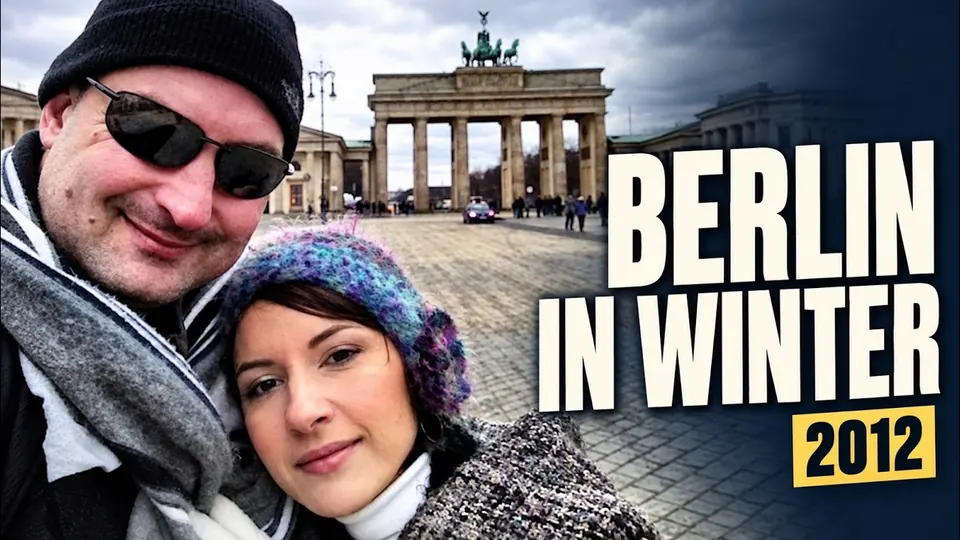

Brandenburg Gate
Berlin, Germany

The places
1 film from a 2012 trip, from places named in the title.
The map marks the places that can be located from that title; it is not a record of one continuous walk.
The map loads when you scroll to it. The stops are listed below.
Map data © OpenStreetMap
Step through the stops
Berlin, Germany
Berlin, Germany
The films